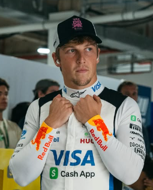

Liam Lawson
Liam Lawson
Team: Racing Bulls
Team Principal: Laurent Mekies
Number: 30
Nationality: New Zealand
Debut: 2023
Born: 11 February 2002
History: New Zealand driver Liam Lawson earned his Formula 1 opportunity through persistence, versatility, and strong performances across multiple racing categories. After several impressive substitute appearances for Red Bull-affiliated teams, Lawson became known for aggressive overtaking, mental toughness, and composure under pressure. Racing for Racing Bulls, he established himself as a highly competitive and ambitious driver determined to secure a long-term future at the top level of the sport.
